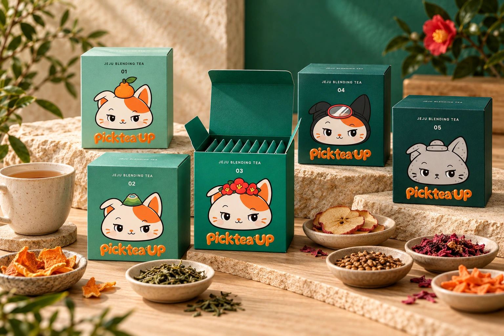

ONE BLEND · 10 TEA BAGS
좋아하는 한 가지 맛,
열 번의 차 시간.
다섯 핑티 중 오늘 마음이 가는 차를 골라보세요.
익숙한 맛부터, 새롭게 발견하고 싶은 맛까지.

FIVE GREENS. ONE TEA CABINET.
봉투의 초록빛을,
작은 상자로.
개별 봉투와 같은 핑티, 같은 초록빛.
정사각 큐브를 열면 브랜드 에메랄드가 이어지고,
한 가지 블렌드 티백 10개가 담겨 있어요.